Disorders of Sex Development (DSD) & Congenital Adrenal Hyperplasia
- A DSD is when the genitals are atypical enough that you can't tell which sex to assign: the karyotype, gonads, internal and external genitalia don't line up. About 1 in 4,500 births. Use neutral words (gonads, phallus, labioscrotal folds) and a team.
- First two tests: karyotype and a pelvic/abdominal ultrasound (is there a uterus? gonads? big adrenals?). Everything else follows the differential.
- 46,XX, overvirilized: CAH by a mile. 46,XY, undervirilized: most often 5α-reductase deficiency (autosomal recessive; high T:DHT) or partial androgen insensitivity (X-linked). Complete androgen insensitivity looks female and is found at puberty.
- 21-hydroxylase deficiency (about 95% of CAH): low cortisol, low aldosterone (in the 75% who are salt-wasters) and too much androgen. Low cortisol → high ACTH → hyperplasia. Diagnose with a high 17-OHP. A salt-wasting crisis at 1–3 weeks (low Na, high K, acidosis, hypoglycemia) can kill, and boys look normal at birth, so the newborn screen catches them.
- Treat for life: hydrocortisone (10–15 mg/m²/day, divided) + fludrocortisone (± salt in infants) + stress dosing. On sex assignment: don't rush. Tertiary team, no name or birth registration until the work-up is done, and assignment ≠ surgery.
Learning Objectives
- List the causes of incomplete virilization in an individual with a 46,XY karyotype.
- List the causes of virilization in an individual with a 46,XX karyotype.
- Understand the presentation of congenital adrenal hyperplasia (CAH).
- Understand the management of CAH.
- Describe the appropriate clinical and laboratory assessment of an infant with ambiguous genitalia.
- Consider how you would communicate your findings of a DSD to the parents.
- Understand the factors to consider when assigning sex to a newborn with a DSD.
Dr. Stein's two-part module (Part A: virilization; Part B: CAH). It builds directly on 3.7 (how the tract normally develops) and on the adrenal steroid pathway in 3.1.
What a DSD Is, and Isn't
This is about biological sex: the anatomy. It is not about gender identity, gender expression or sexual orientation; those are in 3.8.
The scene: a baby is born, and the first thing the parents ask is "boy or girl?" Here the genitals don't obviously say.
| Definition | The phenotype is atypical enough to cause uncertainty about which sex to assign at birth |
| What doesn't match | One or more of: karyotype · gonadal histology · internal genitalia · external genitalia |
| How common | Genital differences needing genetic or endocrine work-up: about 1 in 4,500 births |
| Not always at birth | A DSD can instead show up as abnormal puberty later |
| Who's involved | Multidisciplinary: endocrinology, genetics, surgery/urology, gynecology, neonatology, social work, psychology and mental health support for the parents |
First, How It Normally Works
![Slide titled Principles of Sexual Differentiation with a flow diagram of sexual differentiation in the fetus. The undifferentiated gonad with the SRY gene on the Y chromosome becomes testes; Leydig cells make testosterone, converted to dihydrotestosterone by 5 alpha reductase; testosterone makes male internal genitalia (Wolffian ducts); DHT makes male external genitalia; Sertoli cells make anti-Mullerian hormone, which inhibits female internal genitalia. Without SRY, ovaries and female genitalia. Side labels: SRY; 46,XX for normal ovarian development; Sertoli and Leydig cells; T to DHT with 5 alpha reductase.](../../../../assets/images/week-3/sex-development-disorders/sexual-differentiation.jpg) Every DSD is a break somewhere on this diagram. Learn it and the differential writes itself.
Every DSD is a break somewhere on this diagram. Learn it and the differential writes itself.
| Step | Does |
|---|---|
| SRY (on the Y) | Turns the gonad into a testis |
| Sertoli cells → AMH | Müllerian ducts regress (no uterus); stabilizes the Wolffian ducts |
| Leydig cells → testosterone | Builds the male internal genitalia (Wolffian ducts) |
| 5α-reductase: T → DHT | DHT builds the male external genitalia |
| No SRY | Ovaries and the female tract, but normal ovaries still need a normal 46,XX. It isn't just "no Y" |
Examining the Newborn, and the Words to Use
| If it looks more female, describe | If it looks more male, describe |
|---|---|
| Labia majora and minora · any labial fusion · 1 or 2 urogenital openings · clitoral size | Scrotum: median raphe and rugation · where the urethral opening is (tip, or along the shaft = hypospadias) · phallus length and width · palpable testes? |
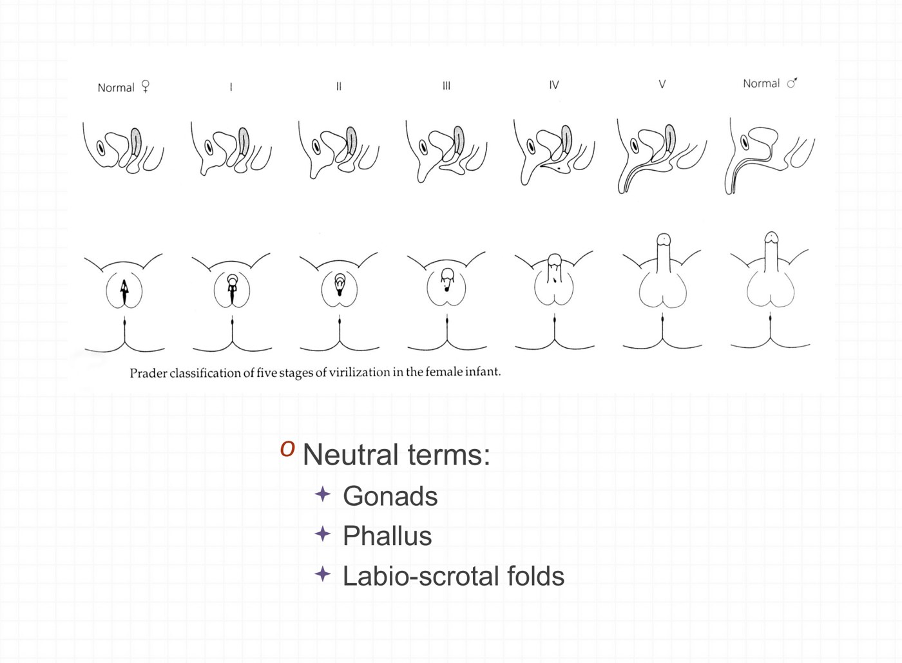
It's a spectrum. The Prader stages run from normal female through I–V to normal male: more labial fusion, a bigger phallus, and the urethral opening moving toward the tip.Until you know the diagnosis, use neutral words:
| Say | Not |
|---|---|
| Gonads | Testes / ovaries |
| Phallus (and measure it: "2 cm") | Penis / clitoris; micropenis / clitoromegaly |
| Labioscrotal folds | Labia / scrotum |
| Urogenital opening | Urethra / vagina |
This is also how you talk to the parents: describe what you see without committing to a sex you may have to take back.
The Case: Baby A.H.
Born by spontaneous vaginal delivery at 40 weeks (mother had diet-controlled gestational diabetes); birth weight 3,052 g; Apgars 9 and 10. Initially identified as male. At 4 days old, someone raises a concern about the genitalia:
- 3 cm phallus
- Hyperpigmented, fused, rugated labioscrotal folds
- A single urogenital opening at the base of the phallus
- No gonads palpable
What next? The first question is: an overvirilized girl or an undervirilized boy?
- Karyotype: 46,XX or 46,XY?
- Pelvic/abdominal ultrasound: quick and easy. Is there a uterus (Müllerian structures)? Where are the gonads? What do the adrenals look like?
- Other labs based on the differential.
Baby A.H.'s answer is in Part 2. (The case slides use clinical photographs, which are left out here; the findings are listed above.)
The Differential: Undervirilized XY, Overvirilized XX
The two big groups. Mixed and sex-chromosome DSDs exist but are much less common.
The Groups
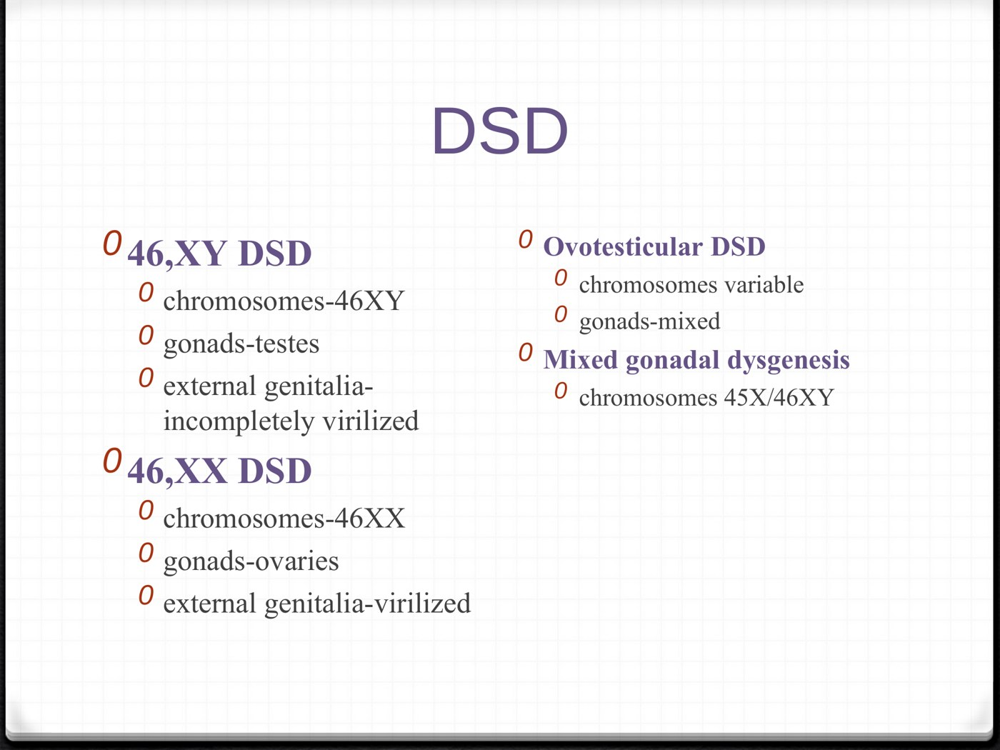
46,XY DSD: The Undervirilized Male
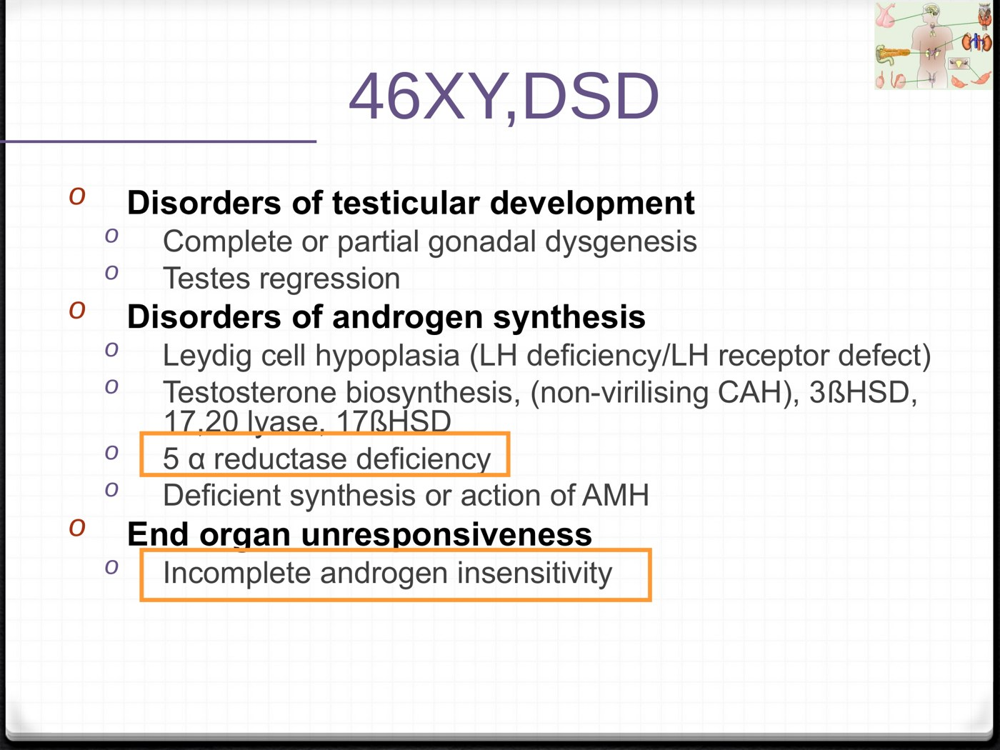
Three places to break: the testis doesn't form, the hormones aren't made, or the hormones aren't sensed. The two highlighted in orange are the most common.| Level | Causes |
|---|---|
| Testis doesn't develop | Complete or partial gonadal dysgenesis; testicular regression (e.g. lost blood supply) |
| Androgen not made | Leydig cell hypoplasia (LH deficiency or LH-receptor defect) · testosterone biosynthesis enzyme defects · 5α-reductase deficiency · AMH problems |
| Androgen not sensed | Androgen insensitivity: T and DHT are made, but the receptor doesn't work |
5α-reductase deficiency
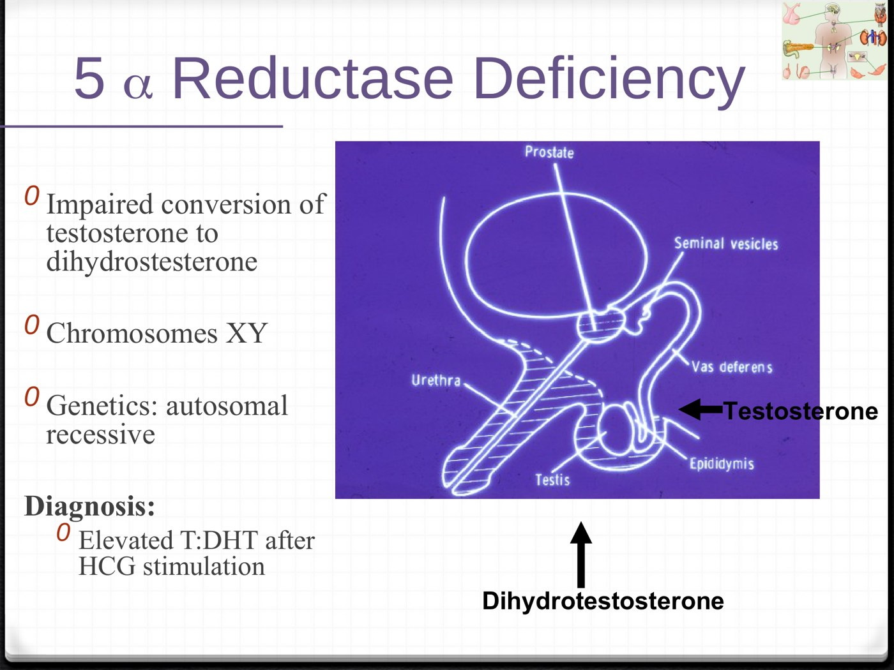
Testosterone can't be turned into DHT. The diagram shows why only part of the body is affected: testosterone builds the internal ducts, DHT builds the prostate and the outside.| Karyotype | 46,XY |
| Inheritance | Autosomal recessive |
| Internal | Normal male; testes in the abdomen, inguinal canal or labioscrotal folds |
| External | Ambiguous |
| Puberty | Incomplete virilization: sparse facial and pubic hair, no temporal recession or acne |
| Diagnosis | High testosterone : DHT ratio (after hCG stimulation) |
Androgen insensitivity: partial vs complete
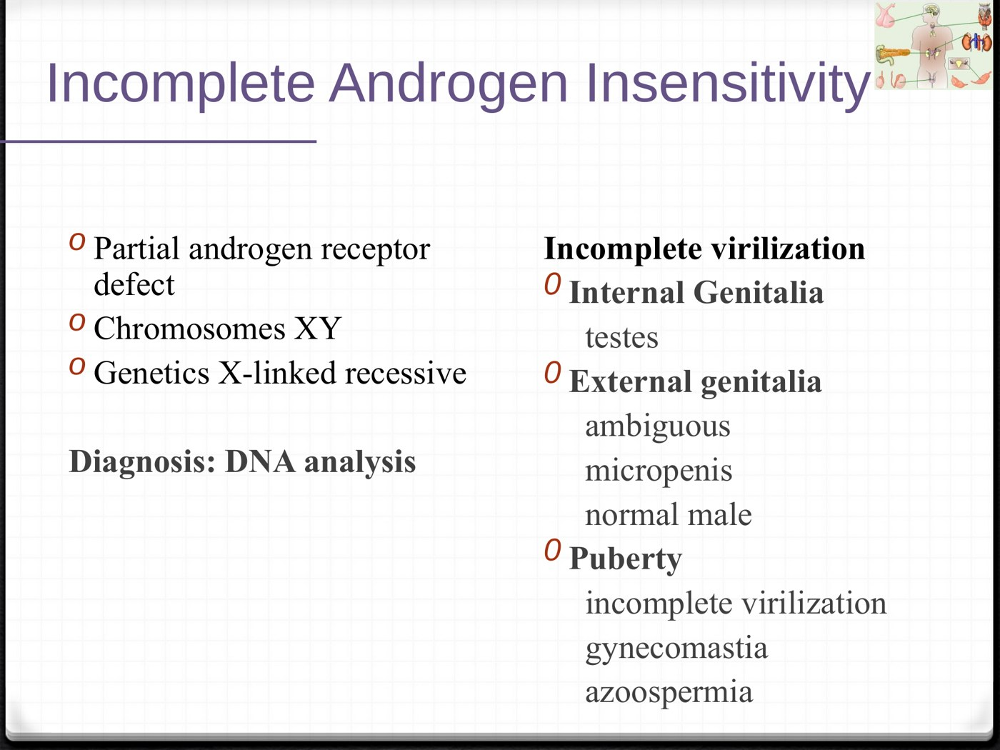
Partial androgen insensitivity: a partly working androgen receptor. X-linked recessive; diagnosed by DNA analysis of the receptor gene.| Partial (PAIS) | Complete (CAIS) | |
|---|---|---|
| Receptor | Partly works | Doesn't work at all |
| At birth | Ambiguous, micropenis, or near-normal male | Looks like a typical girl |
| Gonads | Testes | Testes |
| Puberty | Incomplete virilization, gynecomastia, azoospermia | Diagnosed here, when periods don't come |
| Genetics | 46,XY, X-linked recessive | |
Testosterone and DHT act on the same androgen receptor, but different tissues depend on different ones. Testosterone itself builds the Wolffian ducts (epididymis, vas deferens, seminal vesicles), and later muscle and voice. DHT, a stronger androgen made locally by 5α-reductase, builds the external genitalia and prostate, and later drives facial and body hair, acne and male-pattern balding.
That explains both patterns. In 5α-reductase deficiency the inside is male but the outside is ambiguous; at puberty the testosterone surge virilizes partly, but DHT-dependent features (beard, acne, temporal recession) stay sparse. In androgen insensitivity neither hormone works, so in the complete form the outside is fully female. AMH still works, though, so there's no uterus, which is why these girls have no periods. Mechanism added to link the lecture's slides.
46,XX DSD: The Overvirilized Female
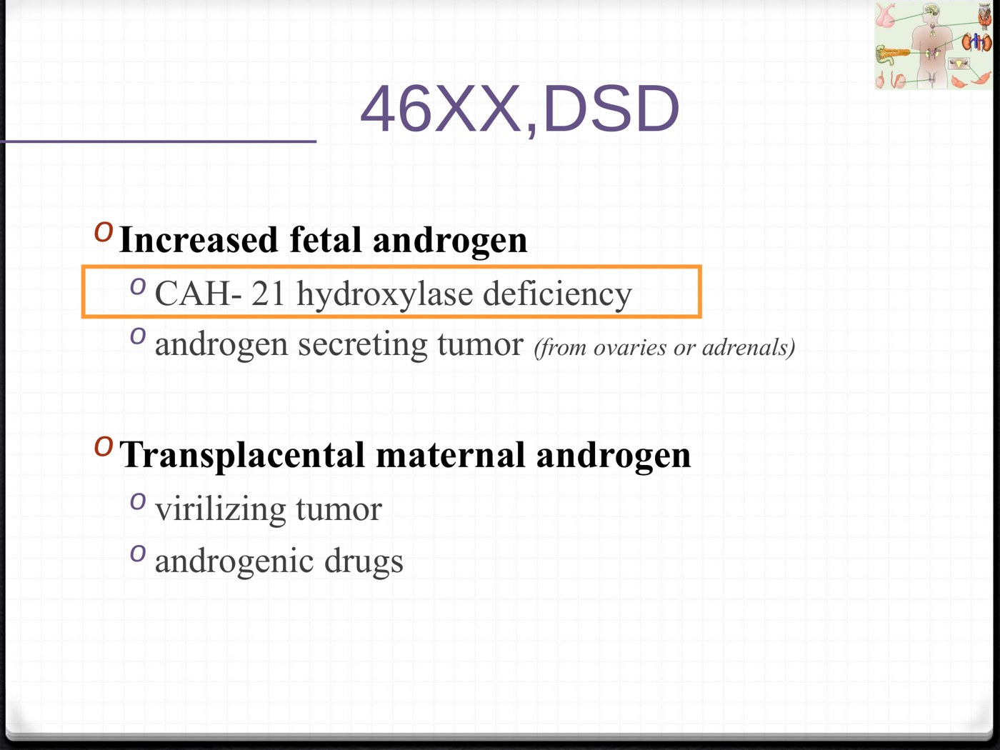
Congenital Adrenal Hyperplasia
The most common cause of an overvirilized 46,XX baby, and a potentially fatal salt-wasting crisis in the first weeks of life.
What CAH Is
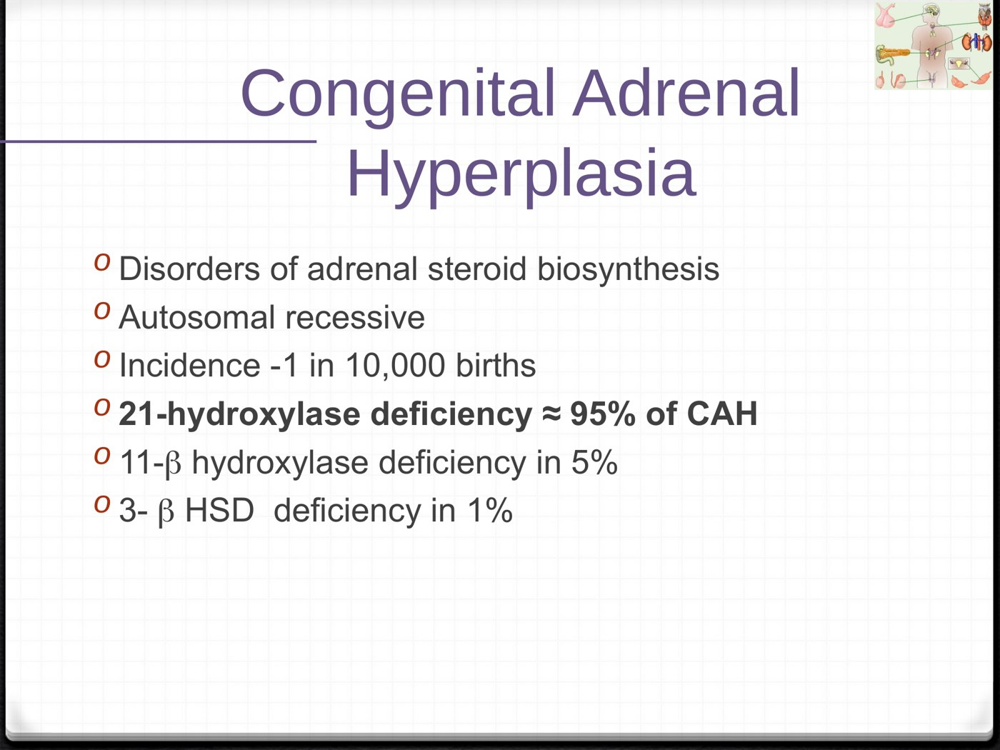
The Steroid Pathway: Follow the Block
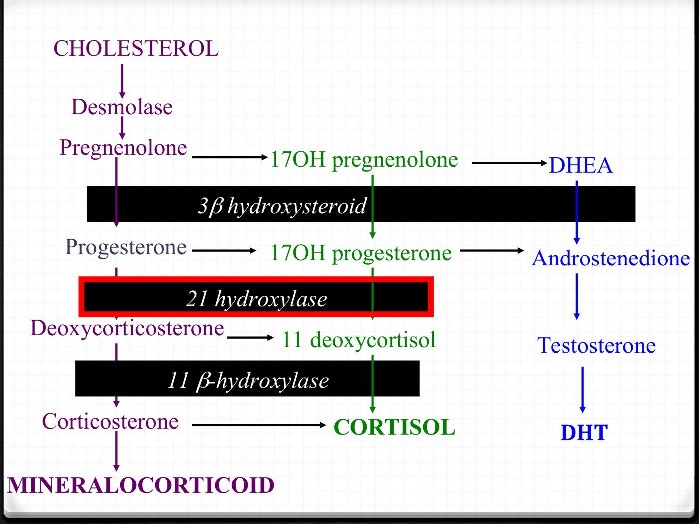
21-hydroxylase blocked (red). Nothing can get down to the mineralocorticoid or cortisol columns, so everything piles up above the block, including 17-OH progesterone, and spills sideways into the androgen column.- Block at 21-hydroxylase → can't make aldosterone or cortisol.
- Precursors (17-OHP) back up and are shunted to androgens → testosterone and DHT → virilization.
- Low cortisol → no negative feedback → ACTH keeps rising → ACTH keeps driving the gland → the adrenal cortex grows: hyperplasia. It gets big even though it isn't working properly.
The same pathway runs through the adrenal lecture, where CAH appears as a cause of primary adrenal insufficiency, and through 3.4, where it's a cause of peripheral precocious puberty.
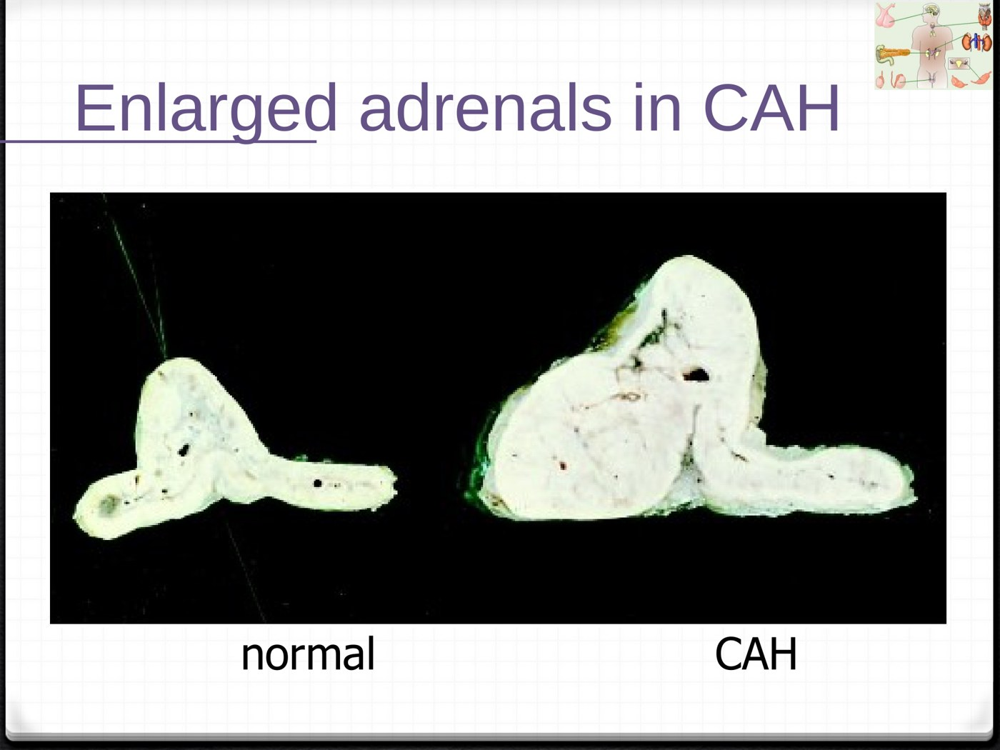
21-Hydroxylase Deficiency: A Spectrum
Caused by mutations in the CYP21A2 gene (the "21-B gene") on chromosome 6. How much enzyme is left decides the picture.
| Classic salt-wasting | Classic simple virilizing | Non-classic (late onset) | |
|---|---|---|---|
| Share | 75% of 21-OHD | About 25% | — |
| Mutations | 2 severe | 1 of the 2 relatively mild | Mild |
| Enzyme left | < 1% | 1–5% | More |
| Cortisol | Deficient | Deficient | Adequate |
| Aldosterone | Deficient: salt wasting | Enough for salt and water balance (renin may be high) | Normal |
| Androgen excess | Yes | Yes | Mild |
| Presents | At birth or in a salt-wasting crisis | Virilization | Not at birth. Before puberty: premature pubarche. After: hirsutism, acne, oligomenorrhea (a PMOS look-alike), infertility |
Non-classic CAH is one of the conditions you must exclude before diagnosing PMOS, with a 17-OHP level. See 3.10.
Diagnosis
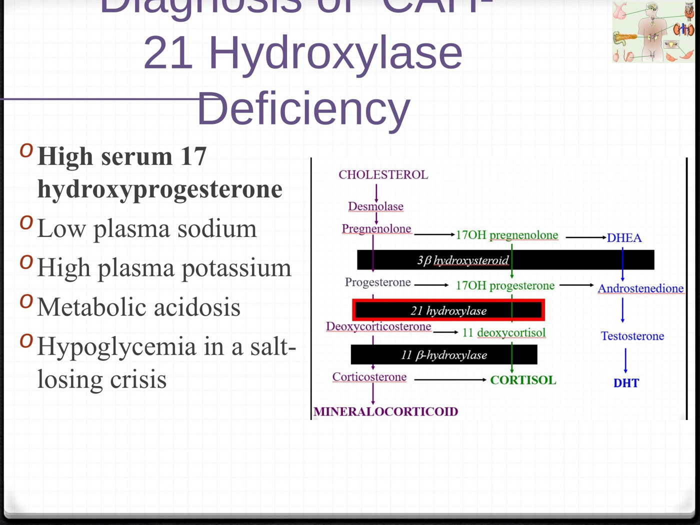
High 17-OHP is the diagnostic test (it sits just above the block). In a salt-losing crisis: low Na, high K, metabolic acidosis, hypoglycemia.| Finding | Because |
|---|---|
| ↑↑ 17-OHP | Backs up behind the 21-hydroxylase block |
| ↓ Na, ↑ K, metabolic acidosis | No aldosterone: the kidney wastes salt and holds K+ and H+ |
| Hypoglycemia | No cortisol |
Karyotype 46,XX, so a genetic girl: an overvirilized female. 17-OHP = 400 (normal < 10). That's dramatically high and confirms 21-hydroxylase-deficient CAH. The hyperpigmented folds fit too: high ACTH also stimulates pigment.
11β-Hydroxylase Deficiency: The Hypertensive One
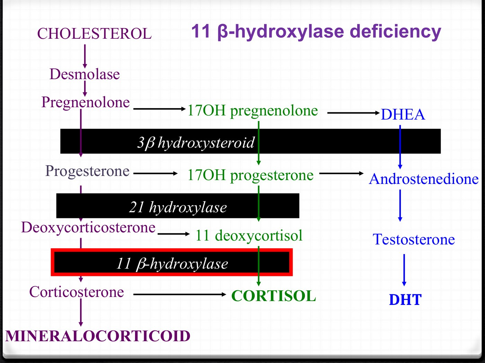
Block one step lower. Androgens still pile up, so there's still virilization. But the precursors that build up now include deoxycorticosterone and 11-deoxycortisol.11-deoxycorticosterone (DOC) is a potent mineralocorticoid in its own right. When it accumulates it holds on to salt and water just as aldosterone would. So instead of a salt-wasting, hypotensive crisis, these babies are hypertensive. Much rarer than 21-hydroxylase deficiency (about 5% of CAH).
How CAH Presents, and Why Boys Get Missed
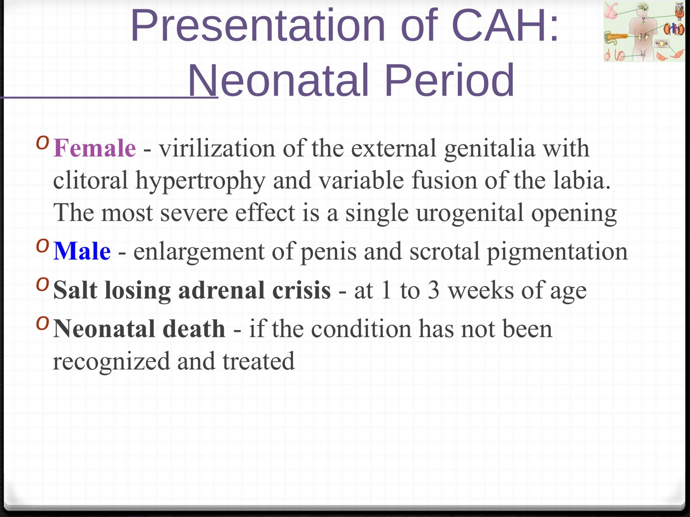
A girl with salt-wasting CAH usually gets picked up at birth because her genitals look different. A boy looks normal and goes home, then crashes into an adrenal crisis at 1–3 weeks. CAH is now part of newborn screening in Canada, which measures 17-OHP on the heel-prick sample, so boys are found before the crisis.
Long-Term Management
| Piece | Details |
|---|---|
| Glucocorticoid, for life | Hydrocortisone 10–15 mg/m²/day, split into 2–3 doses (the lecture bases it on a normal cortisol secretion of about 12.5 ± 3 mg/m²/day). Once growth is finished, prednisone or dexamethasone in older adolescents |
| Mineralocorticoid (salt-wasters) | Fludrocortisone (Florinef) 0.05–0.2 mg once daily. Infants may need extra oral salt |
| Prevent adrenal crisis | Stress dosing: increase the glucocorticoid during illness or other stress to prevent a salt-losing crisis |
| Genital surgery | Discussed with some families, depending on the degree of virilization |
| Education and surveillance | Ongoing |
Why hydrocortisone in children: it is plain cortisol, and the least growth-suppressing option. The longer-acting prednisone and dexamethasone are held until growth is finished. Stress dosing is the same principle as in any adrenal insufficiency; see 3.1.
Assessment, Sex Assignment & Talking to Parents
The last three objectives: how to assess the baby, what goes into assigning sex, and how to handle the uncertainty with the family.
Assessing a Newborn With Ambiguous Genitalia
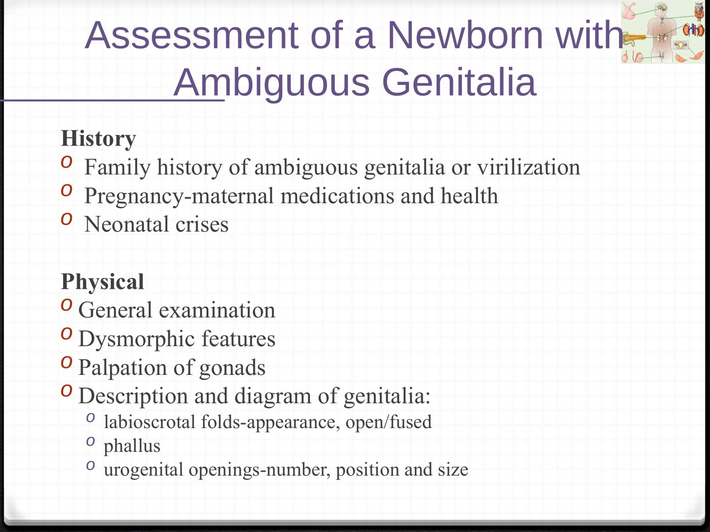
Assigning Sex
Controversial, and the evidence is weak. Outcome data come from adults whose sex was assigned 20–30 years ago with the technology and surgery of the time, but it's the best we have.
| Diagnosis | What happened |
|---|---|
| 46,XX CAH | About 90% assigned female in infancy identify as female. The evidence supports raising even markedly virilized 46,XX CAH infants as female |
| 46,XY complete androgen insensitivity | 100% assigned female identify as female |
| 46,XY 5α-reductase deficiency | About 60% of those assigned female, who virilize at puberty, identify as male; 100% of those assigned male identify as male |
| 46,XY partial AIS, androgen synthesis defects, gonadal dysgenesis | About 25% have gender dissatisfaction, whether assigned male or female |
The consensus (ESPE / Lawson Wilkins Pediatric Endocrine Society)
- Sex assignment does not have to mean surgery. You can assign sex at birth without operating.
- Evidence for the different treatments is lacking, so individual and family considerations are essential.
- Only surgeons experienced in genital reconstruction, who know the long-term outcomes, should be involved early.
At birth
| Factors in the decision |
|---|
| The underlying diagnosis |
| Genital appearance and the surgical options either way |
| The need for lifelong hormone replacement |
| The potential for fertility |
| The family's views, and sometimes cultural practices |
Not knowing their baby's sex is extremely unsettling and stressful for a family. Describe what you see in neutral words, explain that a team will find out what's going on, and be honest that it takes time. Build in psychology and social work support from the start. Waiting on the name and registration isn't bureaucracy: it keeps the family from committing to a sex before the facts are in.
Built from Dr. Robert Stein's "Disorders of Sexual Development" Part A and Part B slide decks (converted from the original .ppt files) and the two recorded lectures. All figures are slides from the decks; clinical photographs of infant genitalia (the newborn, genital examination, Baby A.H. and 5α-reductase slides) are left out, with their findings written into the text. The work-up flowchart is drawn for these notes from Part A's differential slides. Added to link the slides together and flagged where they appear: why testosterone and DHT act on different tissues (explaining the 5α-reductase and androgen-insensitivity patterns and the absent uterus in androgen insensitivity), why 11-deoxycorticosterone causes hypertension, why hydrocortisone is preferred during growth, and the reason ACTH darkens the labioscrotal folds. The outcome percentages and consensus statements are the lecture's own (from the ESPE/LWPES consensus). Related lectures: 3.7 for normal development; 3.1 for the adrenal pathway and adrenal crisis.